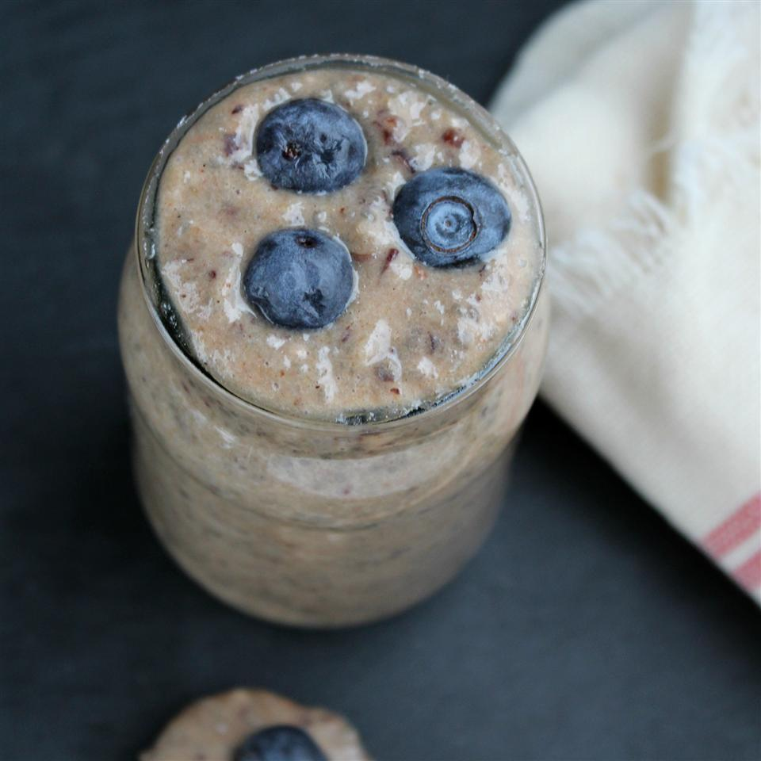

Raw chia porridge

Description
Easy, affordable raw breakfast treat. Top with your favorite fresh fruit!
Ingredients
- ¼ cup chia seeds
- 1 banana
- 2 dates, pitted
- 1 cup almond milk
- ¼ teaspoon ground cinnamon
- salt to taste
- ¼ cup fresh blueberries, or more to taste
Steps
- Place chia seeds in a bowl.
- Layer banana and dates in a blender; add almond milk, cinnamon, and salt. Blend mixture until smooth and pour over chia seeds, stirring well. Let mixture sit until thickened, at least 15 minutes.
- Stir chia "porridge" and top with blueberries.